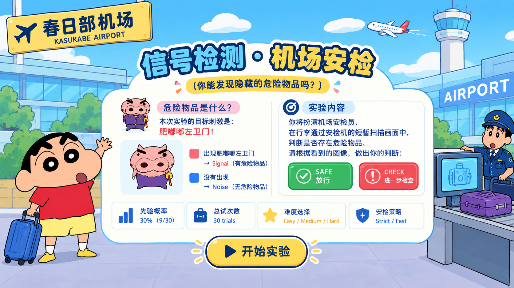

CHECK-IN COUNTER 01
安检任务设置
选择本轮的安检策略与刺激辨别难度。难度改变目标的可辨别程度；策略改变误判的任务代价，从而影响你在不确定时的决策标准。
01 · 安检策略
02 · 刺激难度
30正式 trials
9 / 21Signal / Noise
30%P(S)
SAFE / CHECK二分类响应
TRAINING MODE先熟悉一下操作
扫描完成后，请判断这件行李是否需要进一步检查。
STRICTEASYSignal base rate: 30%
安检监督员
目标：发现肥嘟嘟左卫门请观察 1.8 秒的扫描过程。扫描结束后再作出判断。
安全优先：漏检危险物品的代价更高。漏检 −10｜误拦 −2
本轮得分0
行李正在进入扫描通道…
请等待扫描完成
扫描完成后：← SAFE → CHECK
SECURITY CHECK COMPLETE
本轮安检报告
CHECK
COMPLETE
COMPLETE
Hit–
Miss–
False Alarm–
Correct Rejection–
策略得分–按本轮策略计算
漏检代价–
误拦代价–
Hit Rate P(H)–
False Alarm Rate P(FA)–
Overall Accuracy–
Sensitivity d′–
Criterion c–
Signal / Noise evidence
示意：根据本轮 d′ 与 c 展示 Signal/Noise 分布和决策标准。d′ 反映辨别能力，c 反映决策倾向。
Theoretical ROC
理论 ROC 用于展示不同决策标准下的敏感性—虚报权衡。
为什么策略会影响结果？STRICT 把漏检的代价设得更高，FAST 把误拦的代价设得更高。策略不改变刺激本身的难度，而是改变“不确定时怎么选”，因此主要反映在决策标准 c 和最终任务得分上。
互动概念可视化 · 独立于本轮实验
这里是一个独立的 SDT 概念演示，不使用本轮实验的 d′、c 或反应数据。分别调节 d′（辨别能力）和 c（决策标准），观察 Signal / Noise 分布以及 ROC 曲线和当前决策点如何即时变化。
理论 P(H) –理论 P(FA) –